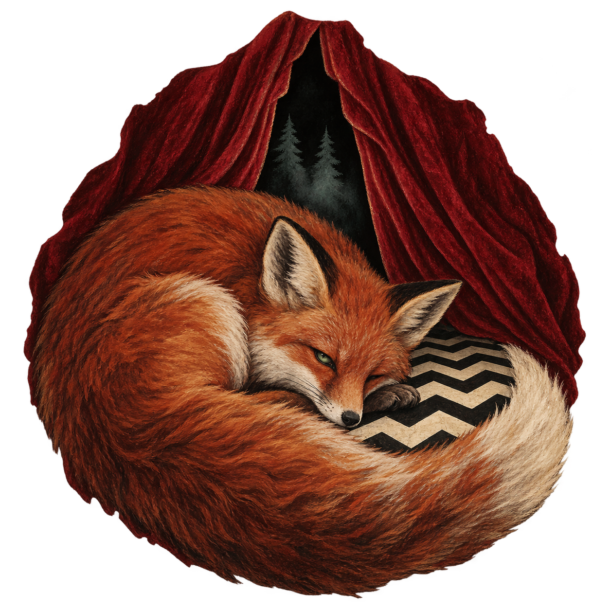
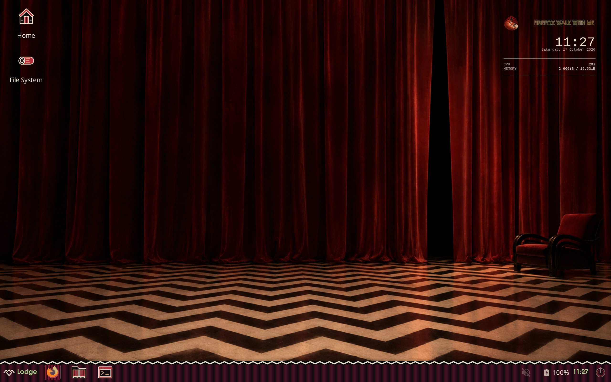
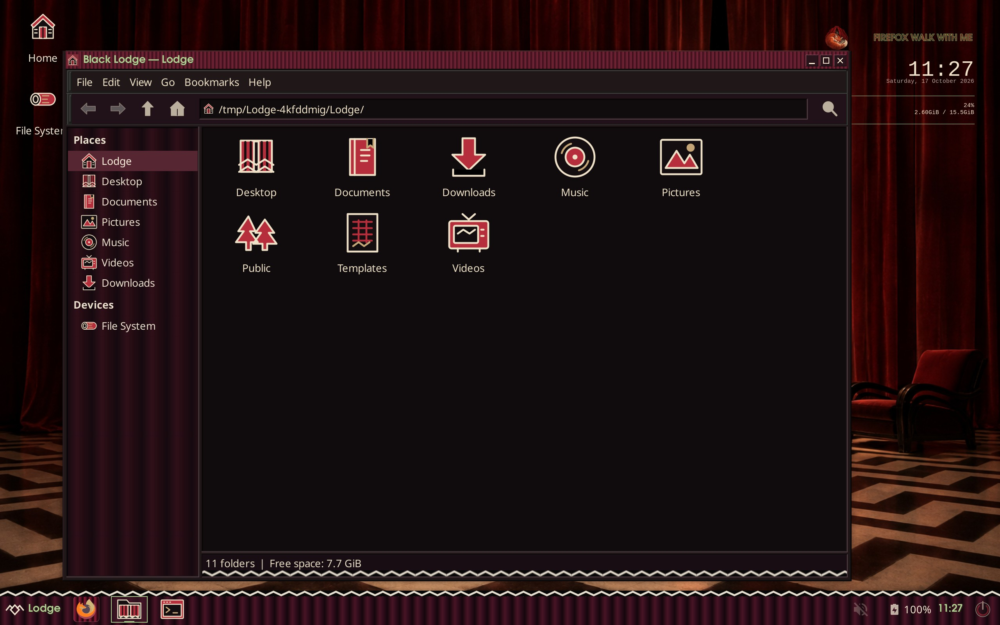
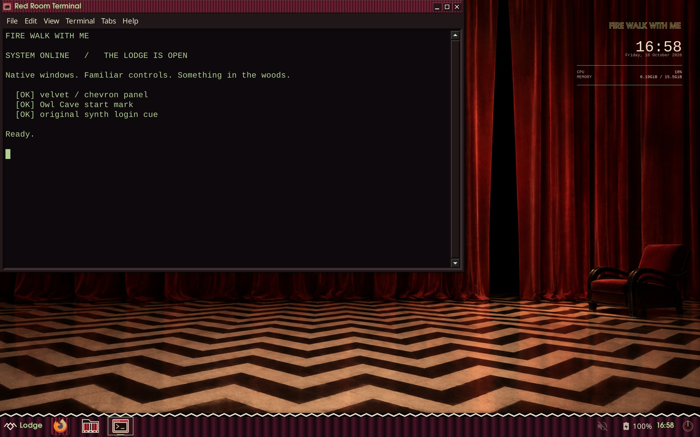

Firefox
Walk With Me
A familiar desktop, somewhere inside the Black Lodge.
An unofficial Twin Peaks-inspired skin for XFCE. Heavy red velvet, a black-and-ivory floor, forest-green lettering. Windows and controls you already know.
For Linux with XFCE · Tested on MX Linux, XFCE 4.20 / X11

The Lodge, on your desktop.
Native windows, menus, folders and a single continuous velvet taskbar. The atmosphere carries through the interface.





Start menu · Settings dialog · Verification and known limits


Enter the Lodge.
Start with an existing XFCE desktop. The installer supports your account or system defaults, including new accounts. Both have a restore command.
GTK2/3/4 themes, XFWM window borders, cursors, wallpaper and folder icons are included. Application marks stay recognizable.
The optional login sound, Into the Lodge, is an original deep-bass synth cue. It contains no music or samples from the show.
Install the listed dependencies, then:
git clone https://github.com/GeorgeFejer91/firefox-walk-with-me.git
cd firefox-walk-with-me
./install.shRestore your previous settings:
./install.sh --restore
The fox in the Lodge.
The approved painterly emblem is used at the top of this page. This companion SVG translates it into 1,907 editable paths, preserving the fox, curtains, trees and floor.
Both editions have a transparent background. The SVG contains real vector shapes and no embedded bitmap.